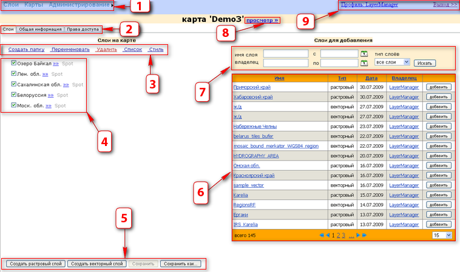
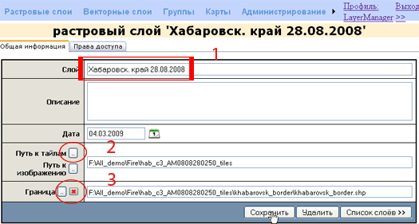
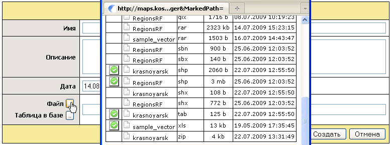
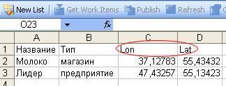
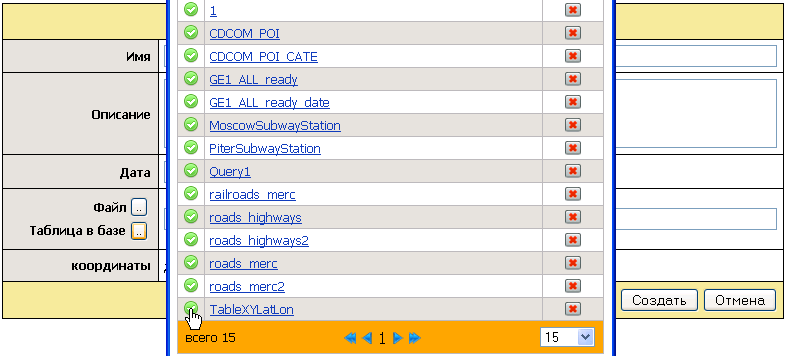
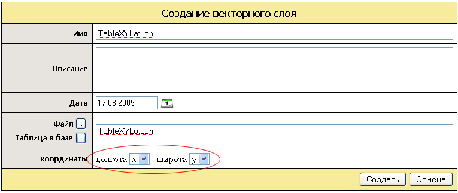
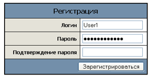
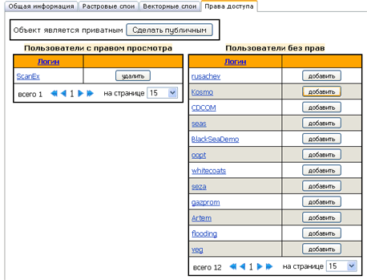

| Общее описание |
| GeoMixer Admin — веб-интерфейс приложения для создания карт и разграничения прав доступа пользователей для просмотра, публикации и редактирования карт.
Карта, созданая в GeoMixer - это набор слоев и базовые настройки их отображения. Каждая карта сохраняется с уникальным ID в базе данных и может загружаться в веб-страницы с помощью API или просматриваться через базовый интерфейс - MapViewer Template
|
| Перечень элементов пользовательского интерфейса |
|
Структура панели редактирования карты

| 1 |
главное меню панели администрирования |
| 2 |
меню управления картой (1) |
| 3 |
меню редактирования содержания карты |
| 4 |
список слоев |
| 5 |
меню управления картой (2) |
| 6 |
список всех доступных слоев |
| 7 |
поиск слоев |
| 8 |
просмотр карты |
| 9 |
статус пользователя |
|
| Создание и редактирование карт |
|
Карты можно создавать, редактировать и удалять.
Создание карты:
- Передите в главном меню в раздел Карты
- Нажмите Создать карту
- Выберите Создать растровый слой или Создать векторный слой в зависимости от того какого типа данные вы собираетесь добавить на карту
Редактирования карты
- Выберите карту в списке и кликните по ее названию - откроется панель редактирования карты
- Вы можете менять порядок слое, группировать их, задавать масштабный диапазон отображения и стили
- После редактирования нажмите кнопку Сохранить
- Для копирования всей карты и сохранения под новым именем - нажмите Сохранить как...
- Для удаления карты - нажмите крестик в списке карты и подтвердите удаление. Карта удаляется без возможности восстановления.
Порядок отображения слоев на карте и порядок отображения в группе задается положением слоя в списке слоев: для того, чтобы отобразить какой-либо слой поверх другого, необходимо задать его положение в списке уровнем выше. Чтобы поменять порядок слоев, следует перетащить слой в списке курсором, держа нажатой клавишу мыши.
По ссылке «Просмотр» можно перейти к предварительному просмотру созданной карты. При этом в адресной строке браузера прописана ссылка на данную карту, содержащая ее ID в базе данных, по которой она может быть просмотрена либо публично, либо теми пользователями, которые имеют права доступа, в случае если карта заблокирована от публичного просмотра (см. Администрирование доступа).
|
| Добавление растровых слоев |
Растровый слой - это данные, которые хранятся на сервере в виде фрагментов растровых изображений, приведенных в одну проекцию и подготовленных для каждого из уровней детализации карты (см. «подготовка растровых слоев»)
Во вкладке «Слои» отображается весь список слоев. Слои можно редактировать, добавлять и удалять.
Для редактирования слоя надо перейти по ссылке с названием слоя в списке слоев.
Чтобы добавить растровый слой надо:
1. Нажать кнопку Создать растровый слой (1)
2. Задать «имя слоя», под которым слой будет отображаться в списке слоев
3. Указать путь к директории на сервере, в которой хранятся фрагменты растрового изображения («путь к тайлам» (2)) или же изображение целиком («путь к изображению»)
4. Опционально возможно добавить описание слоя, которое выводится в общем списке слоев вместе с названием, а так же «файл геометрии» (3), который должен представлять собой полигональный тип границы слоя - в этом случае, при отображении на карте, будет показываться только область слоя внутри заданой границы. (Таким образом можно избавится от черных полей на границах накладываемого на базовую подложку изображения. Поля образуются из-за прмоугольной сетки нарезки изображения на тайлы)
|
|
 |
| Добавление векторных слоев |
Так же как и в случае с растровыми,
векторные слои можно редактировать, добавлять и удалять.
Для редактирования слоя надо перейти по ссылке с названием слоя в списке слоев.
Чтобы добавить новый слой надо:
1. Задать имя и (опционально) описание слоя.
2. Указать путь либо а) к исходному файлу, либо б) имя таблицы в БД:
а) Создание из файла. Векторные данные могут быть представлены в форматах: ESRI Shapefile, MapInfo File Tab/Mif, Excel. Данные в ГИС-форматах (shp, tab, mif) могут загружаться в любой проекции (для загрузки shp-файла необходим соответствующий prj-файл с описанием проекции)

В формате Excel можно подгузить слой точечных объектов. В документе должны быть две колонки с названиями: Lon, Lat, в которых указаны географические координаты WGS84 в десятичном формате

б) Создание векторно слоя из таблицы в БД. В качестве исходных данных для векторного слоя может быть использована таблица внутри БД GeoMixer-а. Таблица может содержать точеченые, линейные или полигональные объекты. Данные о геметрии должны содержаться в единственной колонке с типом geometry (геометрический тип данных в MS SQL 2008). Координаты линейных и полигональных объектов обязательно должны быть представлены в цилиндрической проекции Меркатора на эллипсоиде WGS84. У точечных объектов координаты могут быть в проекции Меркатора или в географических координатах долгота/широта WGS84 в десятичном формате. Также только для точечного типа объектов можно использовать таблицу без колонки типа geometry. В этом случае географические координаты точки долгота/широта должны быть указаны в десятичном формате в отдельных колонках
|
|  |
|  |
| Объединение слоев в группу |
|
Слои можно объединять в группы. Слои из списка затем можно добавлять в выбранную группу.
Для создания группы необходимо сначала создать карту или перейти к редактированию уже созданной карты. (см. «создание и редактирование карт»)
Затем выбрать в меню редактирования карты Создать папку |
| Редактирование стилей растровых слоев |
В режиме редактирования карты можно задавать настройки отображения слоев. Для этого, после выделения слоя, надо нажать кнопку «Стиль».
Если слой - растровый, в стилях можно задавать масштабный диапазон отображения слоя. По умолчанию диапазон задается на все уровни, на которые созданы тайлы. Диапазон задается от и до - значением уровня детализации, которым обозначается линейное разрешение изображения (см. масштабная шкала).
|
| Редактирование стилей векторных слоев |
Стили для векторных слоев хранятся в файле xml и могут задаваться через интерфейс Web GeoMixer Admin. Для этого в режиме редактирования карты надо добавить слой к карте и вызвать окно редактирования стилей.
| Пример записи в формате XML |
Стилевые настройки векторных слоев |
| <style MinZoom="6" MaxZoom="20"> |
Масштабный диапазон:
От и До |
| <BorderWidth>1</BorderWidth> |
Толщина границы |
| <BorderColor>ff3bff</BorderColor> |
Цвет границы в шестнадцатиричном формате |
| <PointSize>5</PointSize> |
Размер точечного объекта |
| <FillColor>255 0 0</FillColor> |
Цвет заливки в RGB формате |
| <Transparency>80</Transparency> |
Прозрачность (в процентах) |
| <Icon>http://site.com/img.png</Icon> |
Адрес картинки для отображения в качестве объектов (для точеченого слоя) |
<Label>
<FieldName>Name</FieldName>
<FontColor>255 0 0</FontColor>
<FontSize>15</FontSize>
</Label> |
Название поля таблицы атрибутов
Цвет шрифта
Размер шрифта |
|
| Администрирование доступа |
|
Администратор системы может редактировать все карты, а также создавать пользователей и раздавать им права доступа и управления картами.
Для того, чтобы создать нового пользователя надо перейти Администрирование ─ Пользователи ─ Регистрация
Далее Администратор активирует пользователя Администрирование ─ Пользователи ─ Имя пользователя. Активный пользователь получает возможность добавлять слои и создавать карты. При этом ему будут доступны только те карты, которые созданы им самим.
Если пользователь создает карту он, а также Администратор системы могут управлять правами доступа к данной карте. Карты ─ Имя карты ─ Права доступа
В случае добавления пользователя в качестве Пользователя карты тот получает возможность просматривать карту, если она заблокирована от публичного просмотра. В случае добавления в качестве Редактора пользователь получает возможность редактировать содержание данной карты.
У карты может быть один или несколько Редакторов. По умолчанию карта создается как публичный объект - т.е. она доступна для просмотра по ссылке (ссылка - это адрес сайта + ID карты - см. Создание и редактирование карт).
Для того чтобы заблокировать карту от публичного просмотра надо перейти Карты ─ Имя карты ─ Права доступа ─ Заблокировать.
В этом случае карту сможет посмотреть только Администратор, Владелец карты и те пользователи, которые получили права доступа к данной карте.
|
|
 |

|